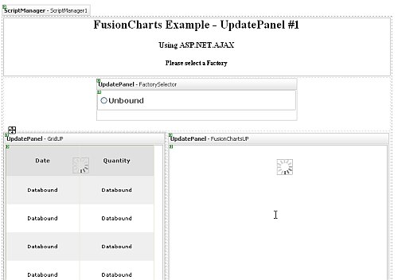
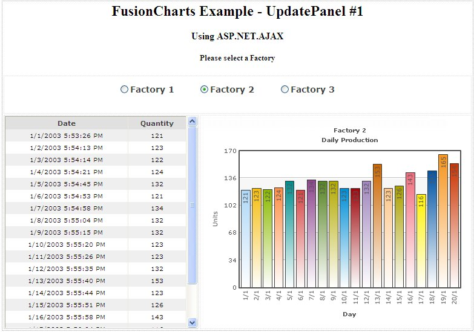
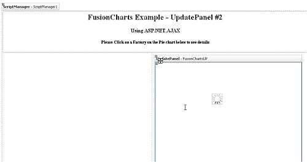
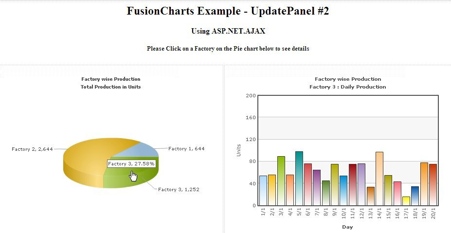

Using FusionCharts with ASP.NET 2.0 (C#)>> ASP.NET.AJAX Update Panel |
FusionCharts can effectively be used in ASP.NET.AJAX Update Panel to plot dynamic data-driven charts. In this example, we'll show a few basic examples to help you get started. We'll cover the following examples here:
Let's quickly see each of them. Before you go further with this page, we recommend you to please see the previous sections "Basic Examples" and other subsequent pages as we start off from concepts explained in that page. |
| All code discussed here is present in Download Package > Code > C# > UpdatePanel folder. |
| To use Update Panel you need to have ASP.NET.AJAX Extension installed in your machine. You can avail it from http://www.asp.net/ajax/downloads. You need to rename the given web.config.ajax to web.config to incorporate the ASP.NET.AJAX extension. |
| Creating UpdatePanels |
We will creare 3 UpdatePanels:
|
|  |
| Lets look at the UpdatePanel code for the FactorySelector: (Sample1.aspx) |
| <asp:UpdatePanel ID="FactorySelector" runat="server"> <ContentTemplate> <asp:RadioButtonList ID="RadioButtonList1" runat="server" AutoPostBack="True" Height="40px" OnSelectedIndexChanged="RadioButtonList1_SelectedIndexChanged" Width="400px" RepeatDirection="Horizontal" Style="font-weight: bold; font-size: 14px; font-family: Verdana" ForeColor="#404040"> </asp:RadioButtonList> </ContentTemplate> </asp:UpdatePanel> |
| Here we set a code behind function to be called when selection changes. Since AutoPostBack is set to true it will evoke AJAX call. |
| The UpdatePanel code that will contain the chart is simpler. |
| <asp:UpdatePanel ID="FusionChartsUP" runat="server"> <ContentTemplate> <asp:Panel ID="Panel1" runat="server" Height="350px" Width="440px"> </asp:Panel> s </ContentTemplate> </asp:UpdatePanel> |
| Here we palce a Panel control where the chart will be loaded. |
| Now let's find out what happends in the code-behind (Sample1.aspx.cs) function RadioButtonList1_SelectedIndexChanged() when a Facory is selected : |
| protected void RadioButtonList1_SelectedIndexChanged(object sender, EventArgs e) { //Update FusionCharts and gridview with as per selected factory updateChart(); } |
| It calls up UpdateChart() function. Let's trace it: |
private void updateChart() //Create data reader to bind data with GridView //Create database connection to get data for chart //Create FusionCharts XML //Create chart element //Iterate through database //Close chart element //outPut will store the HTML of the chart rendered as string //Clear Panel control which will contain the chart //Add Litaral control to Panel which adds the chart from outPut string //Close Data Reader |
In the above code we do the following :
|
| Note that we also used InfoSoftGlobal.FusionCharts.RenderChart() method when isPostBack is false. We do this for a specific reason to deal with the Internet Explorer's 'Click Here to Activate Control' message when a page loads for the first time, i.e. no post back is done. |
| Thus, the chart gets updated in UpdatePanel, using AJAX, each time a factory is selected from the Radio buttons list. Here goes a screenshot of one instance : |
|  |
| Modified Sample |
| We modify the sample above to insert two charts. One on the left, a pie chart with summary data, showing total production of each Factory in each slice. On clicking a slice, i.e. selecting a Factory, another chart will show up in an UpdatePanel. This chart, a Column2D chart, like the previous example will show the the details of the slected Factory. |
Lets see how the desing is modified :(Sample2.aspx) |
|  |
| Here, we put only one UpdatePanel i.e. FusionChartsUP that will load up the chart. The HTML code for this remains the same as the previous example. The left part will contain the Pie chart that will load up once, when the page is loaded first. But we have an added Javascript to add in this page : |
| <script language="javascript" type="text/javascript"> //Call Ajax PostBack Function function updateChart(factoryId){ //Call drillDown C# function by Ajax //we pass the name of the function ('drillDown') to call //and the parameter (i.e. factoryId) to be passed to it //both separated by a delimiter(here we use $, you can use anything) __doPostBack("Panel1","drillDown$" + factoryId); } </script> |
| This function is actually evoked when a pie slice is clicked. The factory id is passed to the function. This function used the ASP.NET.AJAX 's function __doPostBack(). This function takes 2 parameters. The first one is name of the control where post-back updates will be reflected. Throuhg the second parameter we pass the name of the code-belind function to be called along with the parameter. This parameter passed to the code-belind script as request variable - __EVENTARGUMENT. |
| To know more on how to evoke JavaScript functions form a chart please refer to section Guide for Web Develpers >> Drill Down Charts |
| Let's now see how the request is treated in the code-behind file Sample2.aspx.cs. |
| protected void Page_Load(object sender, EventArgs e) } |
The above code is executed whenever a page is loaded be is at first or through AJAX call. It does the following :
|
| The final outout will look like this : |
|  |